The Strainer
The Strainer is a infinite runner mobile game for android, it's similar to games like subway surfers and temple run but with a horror game twist and a ps1 style art direction!
As the PROGRAMMER for this assignement, I'm tasked with coding all gameplay features and putting all models, textures, and animations into the game engine and getting them assembled!
Below is my Development Process where I got over the ups and downs, struggles, and things I'm proud of with the development of the project.
Development Updates & Devlog
Reflection
Our development of this mobile game has finally come to an end, and I’m happy to say that not only have I learned a lot, but I’ve also improved my abilities quite a lot, I’ve learned a lot more about animation over the course of this project, as well as some of the sound systems in Unreal, along with many other things that have not only helped me get better at using Unreal, but also improved my ability to work in teams.
Over the course of this project, a lot of things went well, we got the basic gameplay loop down within the first sprint and things were smooth sailing for most of the project, I am especially proud of the effects I got for the UI, It was my first time trying to have a rough / blurry effect for my UI, the first time I’d ever had to work with trying to make my UI look NOT clean and crisp, it was certainly a challenge at the beginning, especially since before this I hadn’t gone too deep into the UI editor for Unreal, but I think this project really showed me that not only did I have what it takes to make good UI, but also that I enjoy UI creation quite a bit and I am pretty good at it, I learned how to recreate the old VHS camcorder aesthetic pretty well, I even got the blur of the text down where I could, which really added to the style and the overall feeling of the game.
UI Examples:
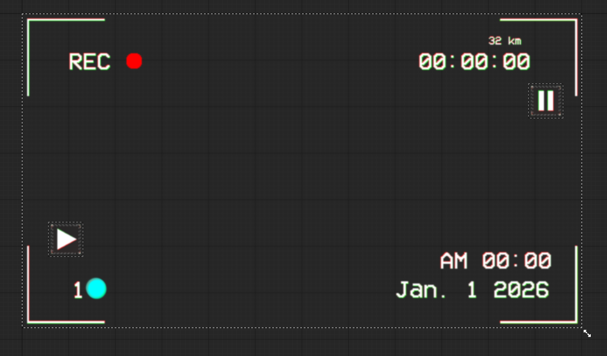
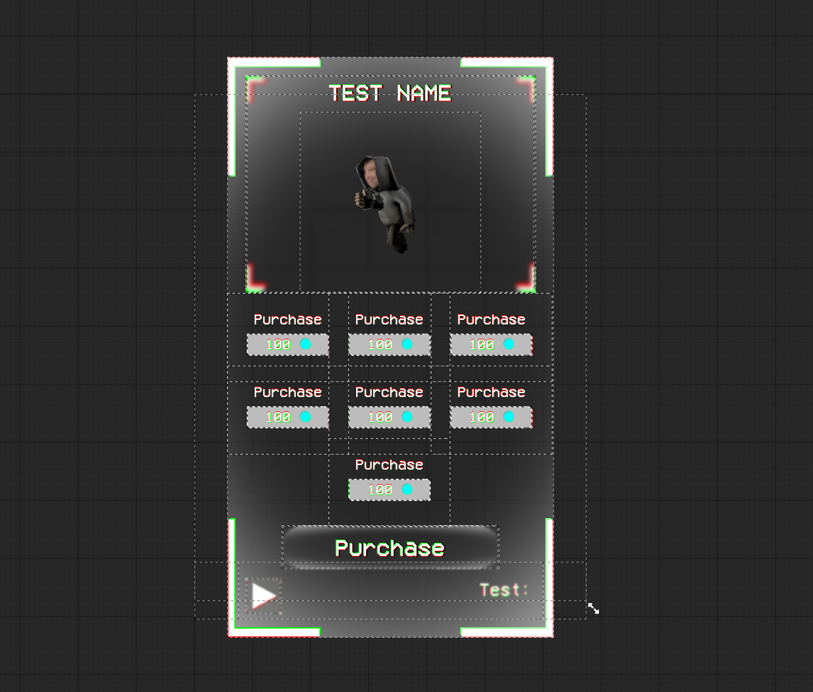
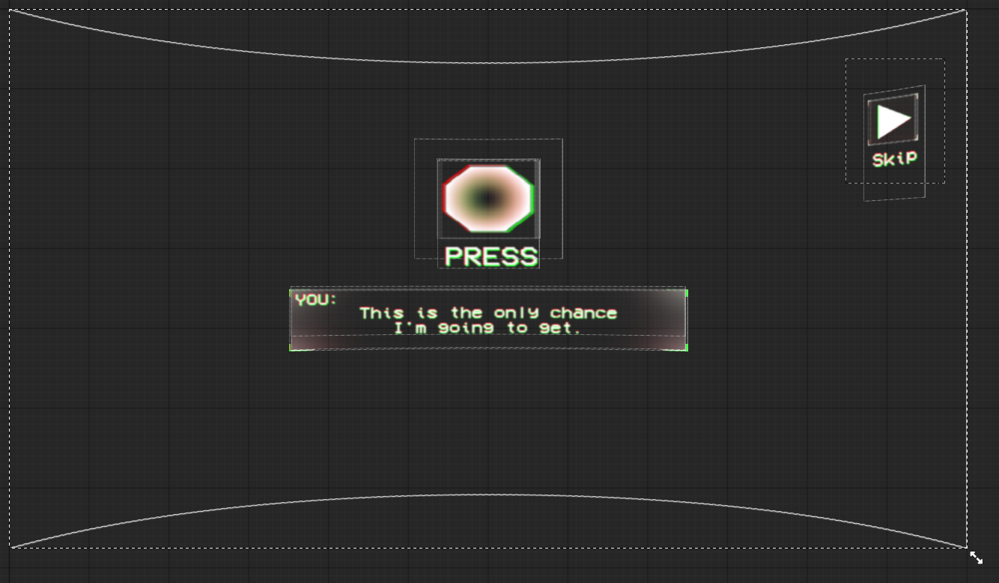
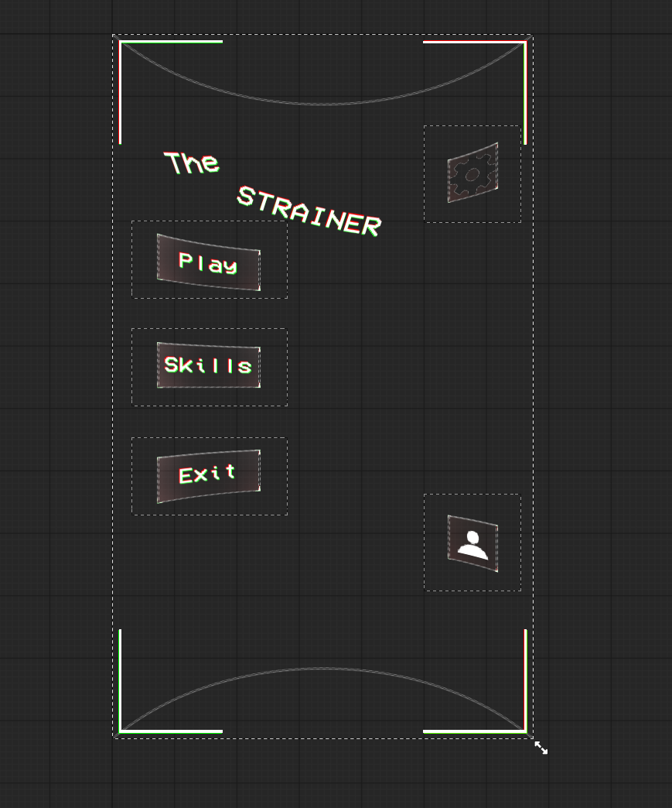
Another thing that went really well was how I dealt with sound effects and music. In one of my previous sprint reviews I talked about some of my new experiences mixing my own sound effects, but using existing audio completely unrelated to what I needed and mixing it to fix what I was looking for, and this ended up working out perfectly, making all of my sound effects turn out great and really fit what I was looking for, but the thing I’m most proud of is the music, I had a friend work on it but when implementing it into Unreal, I found that the basic unreal engine sound system really wasn’t what I was looking for, so after a bit of digging I ended up running into the Metasound system, which was honestly what I was looking for in a sound system for a long time, instead of playing sounds and being done with them like the only sound system, Metasound lets me have them as a living sound I can access during runtime, which really helped me do some super cool things with the music that I am very proud of, and overall helped me grow my knowledge about Unreal Engine
Music Code:
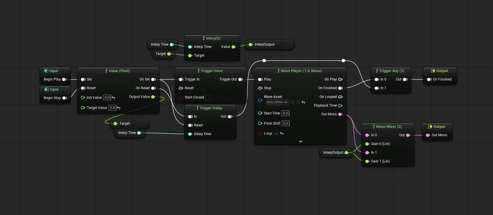
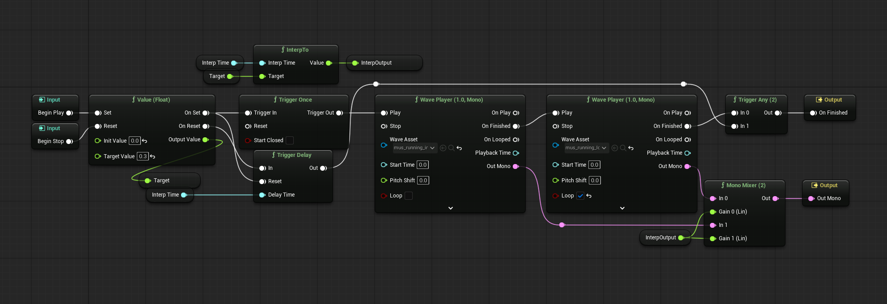
On the other hand, some things definitely didn’t do good, the thing that was probably the worst for us was underestimating the engine and how many problems it would cause when we built to mobile. I definitely mentioned this before in earlier sprint reviews but originally, we didn’t anticipate any issues, since I’d had lots of experience creating builds for Unreal, and while me and my team figured it’d be a little bit different, we didn’t anticipate just HOW different it’d be, the first issue we had was getting the build to even work, which took me a few days and definitely wasn’t as simple as the few button clicks that building for Windows was. It was hard to learn the pipeline of setting up android studio and getting all the files to work properly.
After, when we finally got the build working, we ran into a plethora of issues regarding rending and lighting in the scene, since Unreal, despite making advances for Mobile, definitely isn’t built for it, leading to a lot of issues with things that worked perfectly fine on computer, such as Post Processing, Skeletal Rendering, and Lighting, all of which gave us issues that took multiple sprints and multiple people to fix, which led us to the unfortunate situation of having to cut my VHS post processing effect that I worked very hard on.
If I had all of this retrospective when starting the project, I would’ve probably prioritized getting the build working and ironing out all of the build errors long before which did, I’d start working on getting a test build set up as early as the first sprint, then build after every major system was added so that we could stomp out bugs and issues as soon as they popped up and we wouldn’t have to deal with spending a lot of time solving them and could focus mostly on coding the actual game and then fixing them as they came up, letting us use much less time overall.
Overall, this project was quite the learning experience, I’m pretty proud of what we made but there is plenty of room for improvement with my next project!
Production Art:
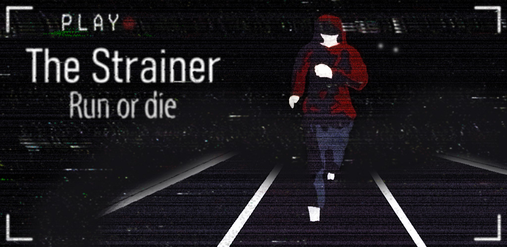

Sprint #6
As we reach the end of our Game’s development cycle and our sprints, our point count has been slowing down a little bit, but this is mostly thanks to us finishing up all the features and models and just focusing on bugs and implementing models. I got 11 points done this sprint, as well as finishing up every single last piece of programming, which thankfully only leaves us with a little bit of implementation to do, and bug fixing, for our last sprint, leaving us with a very chill and empty final sprint.
One of the main things that I did this sprint was working on some of the final UI that was needed and implementing final playtest feedback from our most recent playtest, however what I put the most work into was the respawn screen, a few of our playtesters didn’t enjoy having to go back to the main menu to play another run, so we moved to implement a respawn screen, however we had a small issue where, because of how I coded the intro, adding in respawns without reloading the level created a whole plethora of issues that took forever trying to fix. At first I tried to just get around these issues and account for them, but it felt like every time I did that it broke something else, so eventually I just decided to sort of ‘fake it’ by reloading the level and using booleans to skip past all the introduction and main menu events, which ended up working out really well and fixed pretty much every issue I had.
Respawn Page:
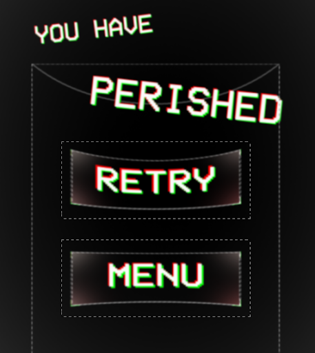
Another big thing I worked on was the pause menu while playing, I honestly can’t believe took me so long to even think of a pause menu, luckily it was much easier than the respawning system and took a lot less time, which definitely helped keep me motivated and left me time to focus on other things.
Pause Menu:
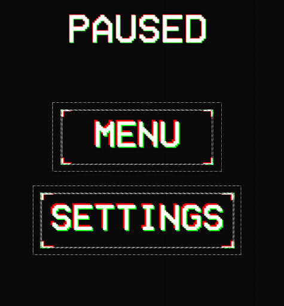
Something I worked on that was a little strange was remaking some of our animation systems, it may not seem like a big deal but for a little bit we were having a small issue where the sliding animation wouldn’t play every time if you were spamming slides, which sometimes gives the player the appearance of phasing through objects, which’d technically count as bug, however it took me remaking and editing an existing system to get it to work the way we wanted to and not do this, so it counted as a point. Originally I was using animation states that were swapped between when the player was running, sliding, or jumping however this could be broken by the spam if you slide while already sliding in the animation state, I fixed this by instead switching to animation montages pushed to a slot, so if you slide again it’d override the animation and play it again, which thankfully fixed all of our issues.
Apart from all of that, most of what I did this sprint was just adding in meshes and textures, getting them all set up correctly, and bug fixing. There were a LOT of bugs that I had to work on during this sprint, but I managed to get quite a few of them done thankfully, I managed to fix some issues with the boost causing people to die after using it, I fixed a few lighting issues that were causing players to get flashbanged, as well as some issues regarding obstacles and their collision / culling that were causing weird camera and gameplay issues, overall, it wasn’t too high of a point count this sprint, but it was very productive!
Randomization of QTE:
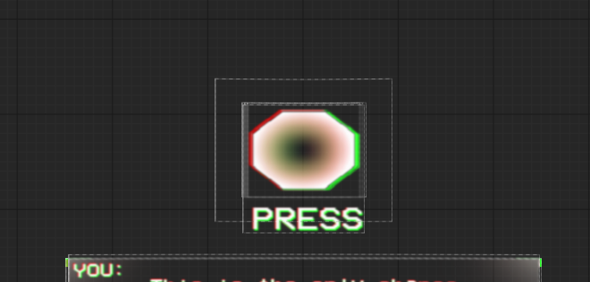
Animation Pipeline:
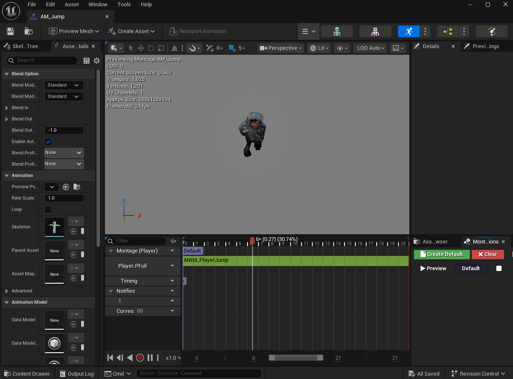
Sprint #5
Unfortunately, I didn’t get as many points done this sprint as I did many of the previous sprints, I’m a little disappointed in myself for not doing over 20, but I was mostly focused on polished and bug squashing this sprint, which is responsible for that low point count, I know this isn’t an excuse, but despite that lowered point count, I WAS still working on the game and being productive, contributing to the final product
This Sprint, I managed to finish 11 points, these were mostly implementing feedback given to us by playtesters, such as making the controls less sensitive or fixing UI bugs, I also made it so that the skin image files were all successfully added to the skins page, and I also created and implemented SFX button clicking sounds, getting them hooked up to the settings menu as well so you can decrease and increase the follow
Updated Skins:
Now to what I spent most of my time this sprint on, bug fixing. A lot of the bugs we encountered are either rare and hard to reproduce, or are only on the mobile build, both of these creating their own challenges for me and my team to handle. The ones that were hard to recreate had me playtesting a lot trying to fix them, the worst of these was a bug that would very rarely occur that would push the internal view of the lanes to the side, causing the player's movement to not be centered to the lanes of the street mesh, which we’re still in the process of fixing and finding the issue of.
When it comes to the mobile build only issues, we faced quite a few and we’re able to fix most of them, unfortunately I did have to scalp my VHS filter even more, reducing it even more in complexity, since Unreal Engine mobile builds don’t seem to like Post Processing shaders too much. The worst issue we encountered was, only on the mobile build, the player would sometimes start running and moving when they were supposed to, walking off the screen even in the title menu, which we’ve managed to fix for the most part by adding a redundancy boolean.
The issue that they mobile build only bugs were so difficult is that we can’t build to android on my primary workspace, so I’m forced to either wait to get to my laptop at home, or to send it to my produce and have him build, then tell me if my fixes worked, it took a lot longer than I would’ve liked, and multiple build attempts, but eventually we managed to get things fixed!
The final thing I really worked on this sprint was assembly of the house and some of the sound effects, the assembly isn’t very notable as it was essentially using building blocks, but the sound effects were certainly fun to work on. I had a little bit of experience with mixing sound effects before but I assumed I would have a little trouble regardless, and I was right, after first I wasn’t sure where to begin, but after talking to someone I know who gave me some advice, I decided to pick a random noise and edit it to be the kind of sound I wanted, which gave me a lot of freedom to work with, I took a completely different and unrelated noise (In this instance the CAASP testing audio cue) and edited it to be completely unrecognizable and fit what I needed, it taught my quite a lot about sound design and I enjoyed it a lot!
Button SFX:
Redone Coloration:
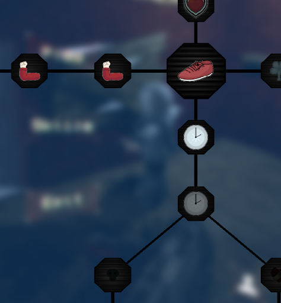
Sprint #4
This sprint, because of how far along I've gotten the programming in the game, I decided that it was best to instead focus on working on some of the textures that we would need for the game, over the course of the sprint I finished 2 full textures sets, or about 25 models, and got 28 points done overall, managing to outdo many people this sprint, I also decided that the best way to get this done was to spam them all for a few days and do very little else, allowing me to get all 25 textures done in just a few days, which saved me time in the long run.
One probably I did have though were some of the UVs, a lot of people do their UVs with the intent that they would be the one doing textures, and my team is no different, but this does unfortunately cause some problems when someone ELSE ends up doing the vertex painting and texturing, leading to me having to make certain small changes to the UVs and Models, which caused even more work.
Texturing Issues:
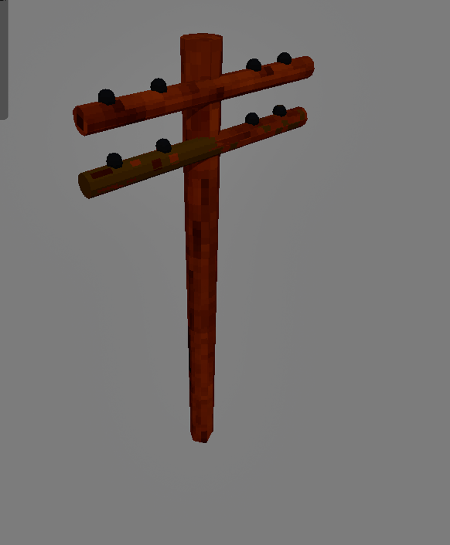
I also ran into certain UVs problems that caused some Vertex Bleeding, I spent a lot of time trying to fix this, and even though I managed to fix most of it, some things, like one of the broken power lines, still had them and I couldn’t find a way to fix them, but I managed to find a way to work around this when texturing them, it even sort of adds to the style of the textures thanks to this which I like quite a bit.
One of the only programming things I did was to work on the Rendering Issues for the build on Mobile, these were issues like The Strainer model not appearing and the VHS effect on the post processing causing some problems with the camera when displayed on mobile, most of the issues were resolved after a few days of the combined work of Me and Andrew, however one problem was still really hard for us to solve, and that was the issue of the VHS effect messing up the camera, we tried everything we could to fix it, but at the end of the day, the only was we could find a way to fix it was gutting the effect, reducing it to about 1/5th of the size it originally was and cutting the majority of the features.
New VHS:
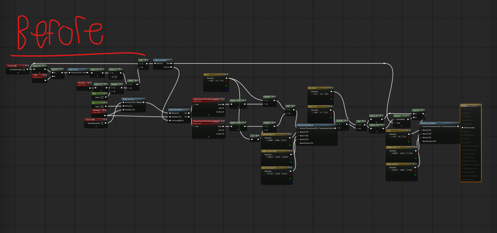
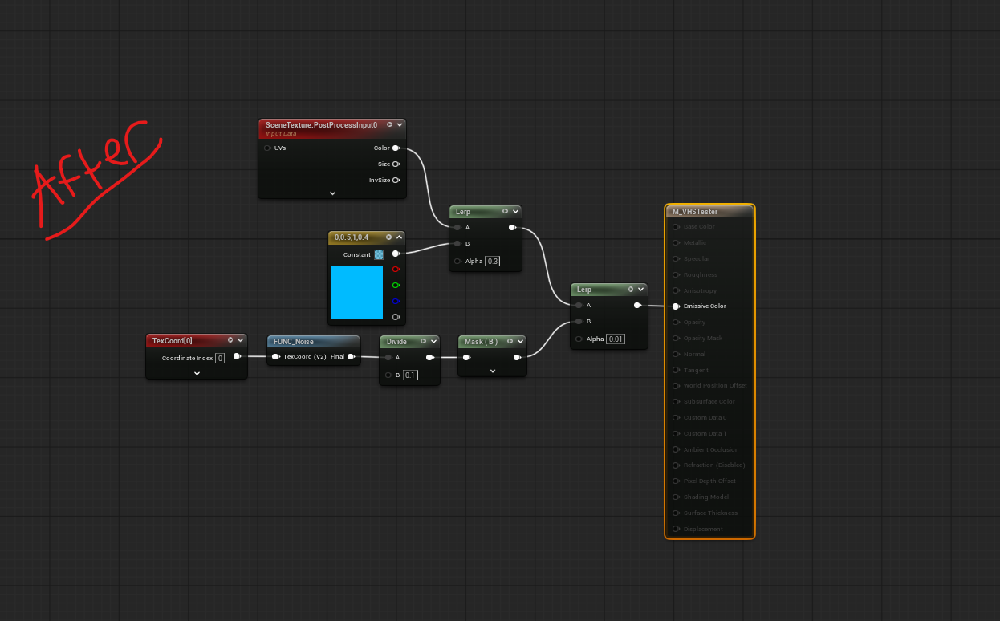
However, on some better news, pretty much all of the textures turned out well, and thanks to the texturing pipeline I designed previously, they turned out really well and looked great, perfectly fitting the style.
All in all, this sprint contained very little negatives for me, and it was a nice break and change of pace to not have to worry about cramming programming and getting to a point count that made me happy, this sprint helped me put the work I usually do into perspective and made me realized that I texture MUCH faster than I can program, she isn’t a bad thing, it just means that, in all, programming takes more effort for me, but that also results in better and more polished systems, which left be in a better headspace to jump back into finishing up the last bit of programming and incorporating playtest feedback in the next sprint!
At our current rate, we’ll have about a sprint and a half of polish time at the end, which is more than enough for us and gives us plenty of time to make sure this game is perfect and up to our standards!
More Textures:
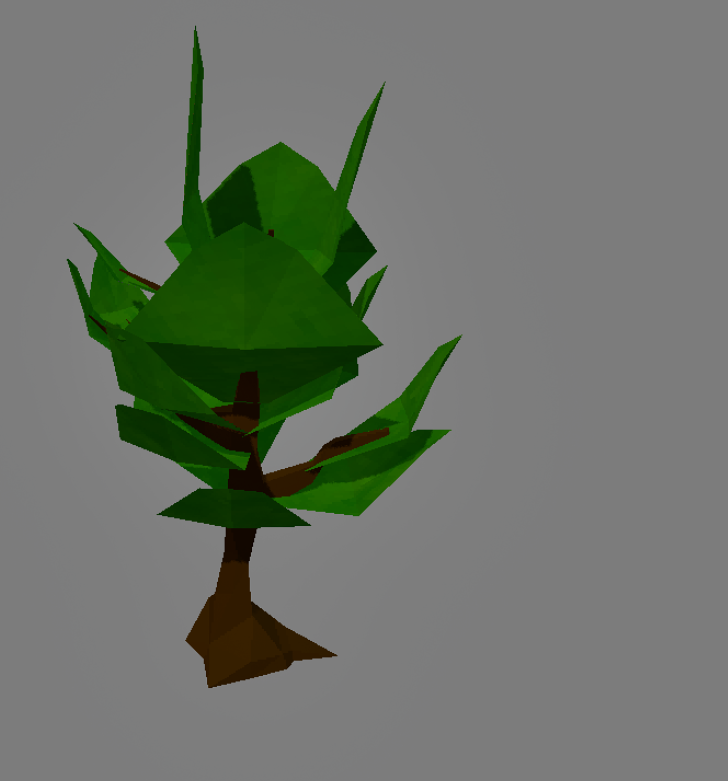
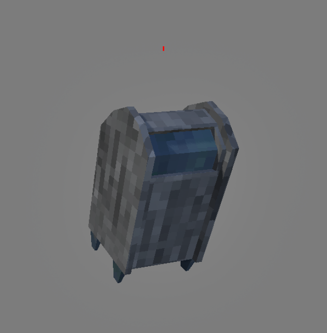
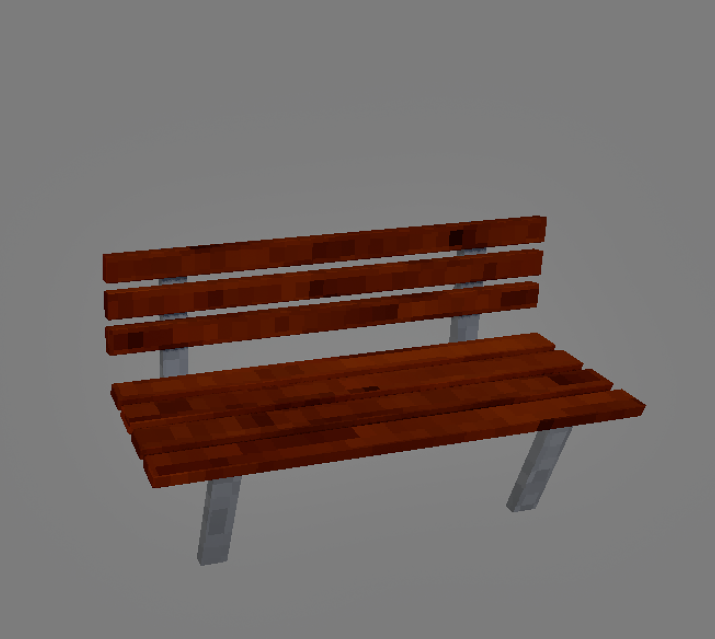
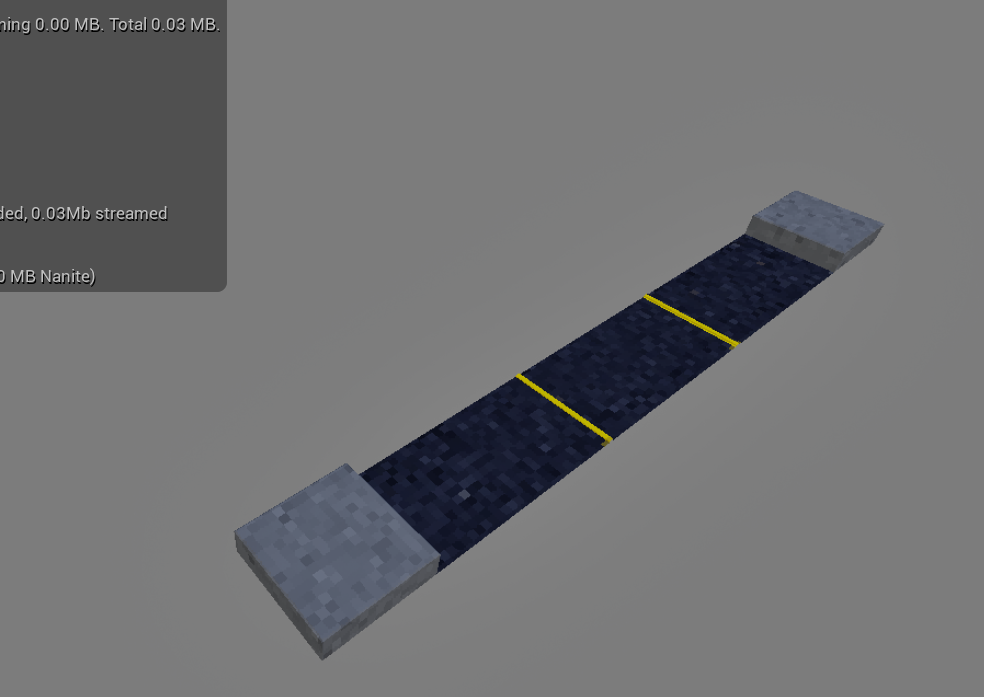
Sprint #3
Our third sprint may be our most productive sprint yet, I managed to get 27 points done, I was hoping to get to 30 but had a little bit of trouble on a 3 point card at the end so I didn’t get around to it
Something I spent a lot of time on this sprint was getting animations set up, we’ve been getting a lot coming in from our Animator so I’ve had a lot to work with and experiment with. I had a bit of knowledge of Animation Graphs and State Machines, but I managed to learn quite a bit more this time around, I even managed to learn something I couldn’t figure out during my Lethal Company project, which was how to push animations to only certain parts of the body, like being able to play idle, attacking, holding, etc on the upper body while the lower body continues to move and run, which is very helpful for this project and future ones. I also taught myself about animation slots and montages, overall I learned a lot and have a newfound respect for riggers and especially people who name the bones in their rigs!
Something I did that I think came out really well has to be the skin menu. We realized that with our current scope, we had time to add in more features so we decided to make player skins, it was a fun system to get implemented, and working on the UI for it made me realise that even though I’m a programmer I could also definitely see myself as a UI Designer, it is pretty fun and I’ve loved how all the UI for this game turned out and I could definitely see myself doing it professionally.
Skins Menu:
Another thing that turned out really well was the quicktime event when being caught by The Strainer, when you’re caught, if you have level 1, 2, or 3 of the Escape upgrades, you have a chance to escape from the strainer 1, 2, or 3 times respectively. Normal, when you’re caught, you just die, but with these perks, you can do a spam click quicktime event to break away from him and continue your run, which serves to really make the player feel like they are stronger and that their upgrades actually have a real effect on their runs, especially since the LVL 1 Escape Upgrade is one of the first ones you can buy!
Strainer Quicktime Event:
The thing I have struggled with the most is my job as the build engineer. We've been running into near constant rendering issues ONLY on our mobile build that I cannot seem to solve, I’ve been spending countless hours attempting to fix these issues, but everything I do and follow seem to only make things worse. Our two main issues are The Strainer’s Skeletal Mesh not appearing and lighting, resulting in our post processing material either not displaying properly or not displaying at all. Both of the previously mentioned things are INCREDIBLY important parts of our game and something we can’t just deal with, but yet during this sprint I have not found a single way to fix it, in fact they’ve only seemed to get worse, I will be working on this moving forward but I’m not totally sure what to do.
Overall we’ve had a really good sprint, and all of the programming for the game SHOULD be finished this sprint, which’ll have me most likely doing some texturing & level design work moving forward after this, which I’ve already started to dabble into, all in all, our game is coming along great so far!
Loading Screen:
Skip Cutscene:
Tutorials:
Running Tutorial:
Sprint #2
February 22th 2026
For our second sprint, we’ve again managed to get a lot done. I somehow managed to get the exact same amount of points done as the first sprint, the only difference being this time one of them was a three point card. Our team overall got a little bit less done, however I believe the cause of that is that one of our group members started working on animations and rigging, which does take quite a lot of time compared to everything else we’re doing, so it makes sense.
Over the course of this sprint, I got quite a bit done, a lot of which I’ve very proud of; The Upgrade Tree, Implementation of Every Upgrade, Description Pages of every Upgrade, Speed Increased, Falling Light Poles, The beginnings of the Enemy, The Main Title Screen, Working Settings, The Introductory Cutscene, and the code behind the animation states for the Enemy! It definitely took a lot of work, and even though it was the same amount of points as Sprint 1, it felt like a lot more work, but I am also extremely proud of how everything turned out, especially all the UI Work I did
The three point card I did, which definitely took a lot of time, was the upgrade tree, and that isn’t even counting the implementation of all the upgrades, some of which are fairly complex, like the boost upgrade, which unlocks a boost for the player. The upgrade tree is a large, easily expandable tree that the player can drag around, and each upgrade can be held to pull up a description page of them, showing the name, description, and price!
Upgrade Tree:
Something I worked on that was very new to me was the settings menu, it sounds pretty easy, but setting up sliders for volume and brightness is something I’d never done before and had no idea to go about doing, lucky, the sliders built into the Unreal UI were very intuitive, however there still came the problem of actually attaching volumes changes to them. I ended up teaching myself about Sound Classes and Mixes, which when put together, allow to you apply changes to different categories of sounds across the game, which lucky were very easy to attach to the sliders, which I was able to test using free use music online, which I will be changing later when we get finalized music for the game.
Settings Page:
Something I’m very proud of that I got working was the Camera Movement system, I’ve done a few Camera Movement systems before but this is probably my most advanced one, taking placable points around the world and adding all their references to a map, added under keys that can be set in the world, then allowing the camera to interpolate between them using Timeline and Ease nodes, getting a very smooth and easy to program camera system that I had a lot of fun making, it took a decent bit to get it fully working, and it had a few bugs, but thankfully it works perfect now and I’m very proud of it! The following video shows off the Camera System in the intro cutscene, this’ll probably be changed slightly once I have all of the models and player animations, but it’s pretty great already!
Intro Cutscene:
Overall, I’m extremely happy with how much we managed to get done this sprint, especially now that we’re getting into Animation and will be getting into Texturing next sprint, we’re making great progress and should even be able to add extra ideas and expand our scope before the game is set to come out! Below this is some videos of other things I did during this sprint, showing off some more of my work!
Enemy Catch Up:
Boost Upgrade:
Sprint #1
February 8th 2026
Our first sprint working on this project was roughly two weeks and boy did we get a lot done, my entire team got 36 cards down, and I did 20. During this sprint I got an entire working prototype down complete with a full UI, shader effects, movement, and road and background generation done, which picks from sets to randomize based on the area
Something I'm very proud of that took me quite a bit of time was the UI, I had the idea to maker the shader and UI resemble a VHS Camcorder to go along with the horror theme, and it took a very long time and a lot of editing, and to be honest I need to go back through and clean up the nodes a lot, but it turned out looking great and I'm very proud of it!'
UI and Shaders:
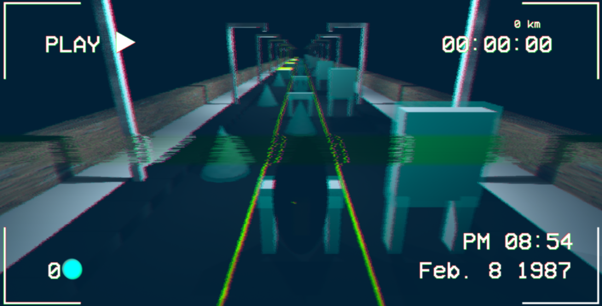
Something I unfortunately struggled a lot on was the placing of the backgrounds, which had an issue where even after you changed locations, it wouldn't start spawning the correct background sets for at least 100 KMs In Game, which was a big problem because it meant that players had to go way too far before seeing a transition to a new location which isn't good, Lucky I managed to fix it by turning down the distance internally.
Spawning Code:
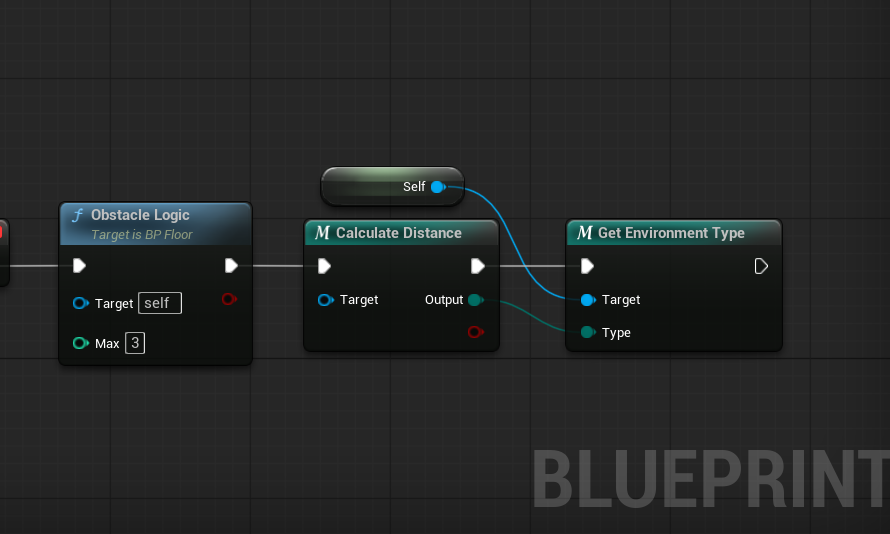
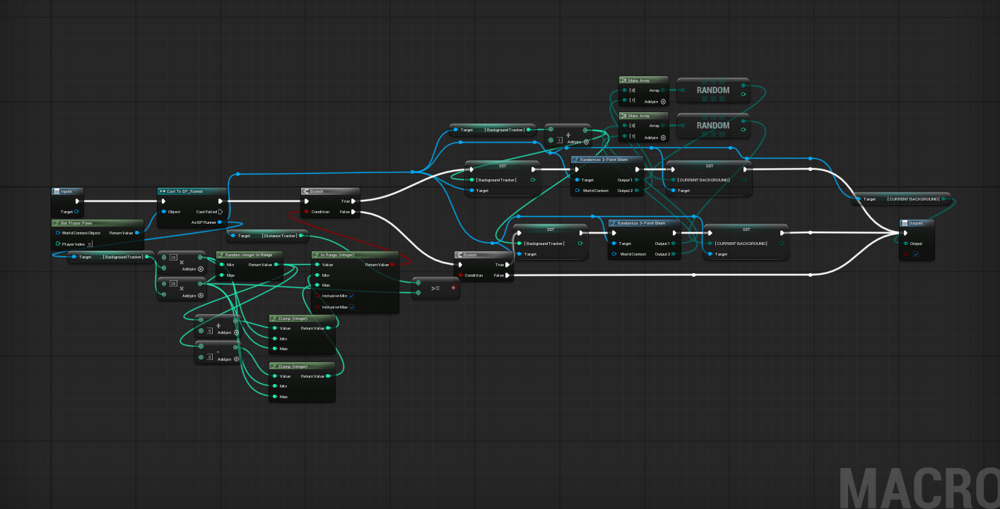
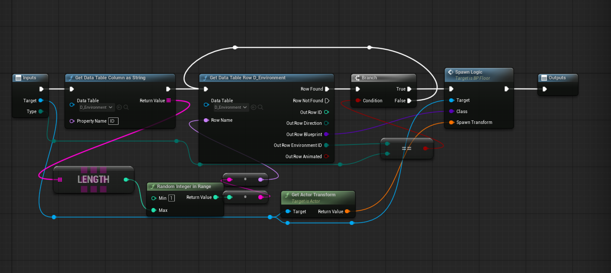
Another big thing that I got done this sprint was working on all of the movement components and inputs, which definitely wasn't easy at first, not only had I absolutely never worked with mobile inputs for Unreal before, but it also wasn't like I could even test them on a phone yet, so I had to look into how to test phone inputs on computer, eventually finding some settings that used the mouse to simulate the inputs of a finger.
Despite me finding this setting, which definitely helped, Unreal's input system for mobile is still a bit primitive, which resulted in my having to run all of the 4 swipe inputs, Up, Down, Left, and Right, off of one input node, which was kind of challenging at first but when I eventually got it I was pretty happy, and since that point, setting up inputs for things has been surprisingly easy.'
Input Code:
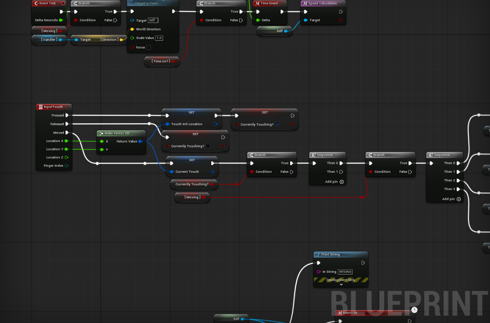
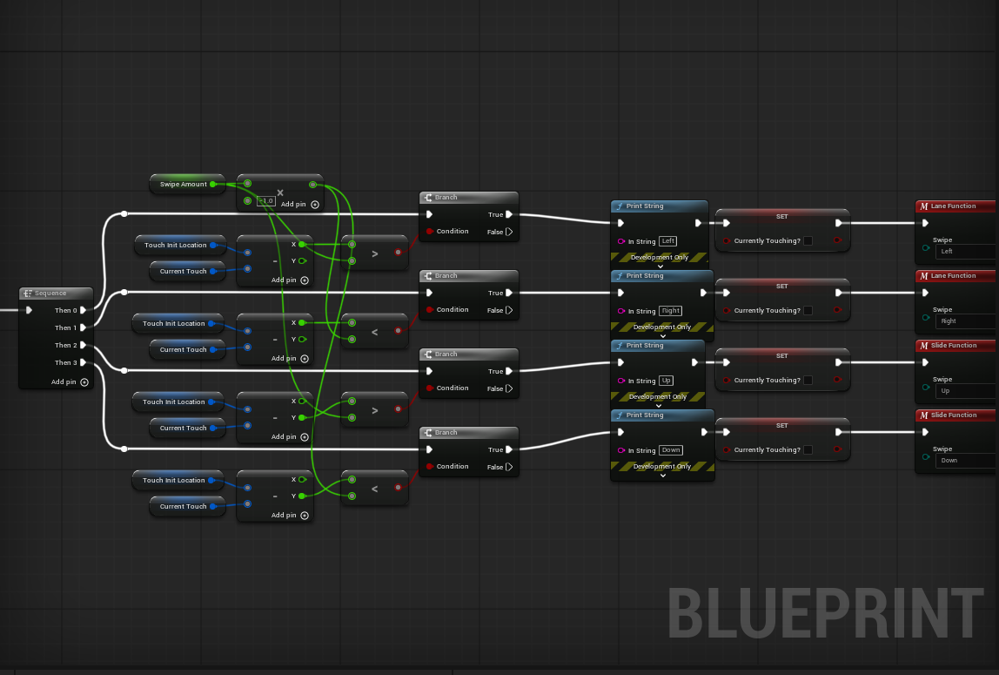
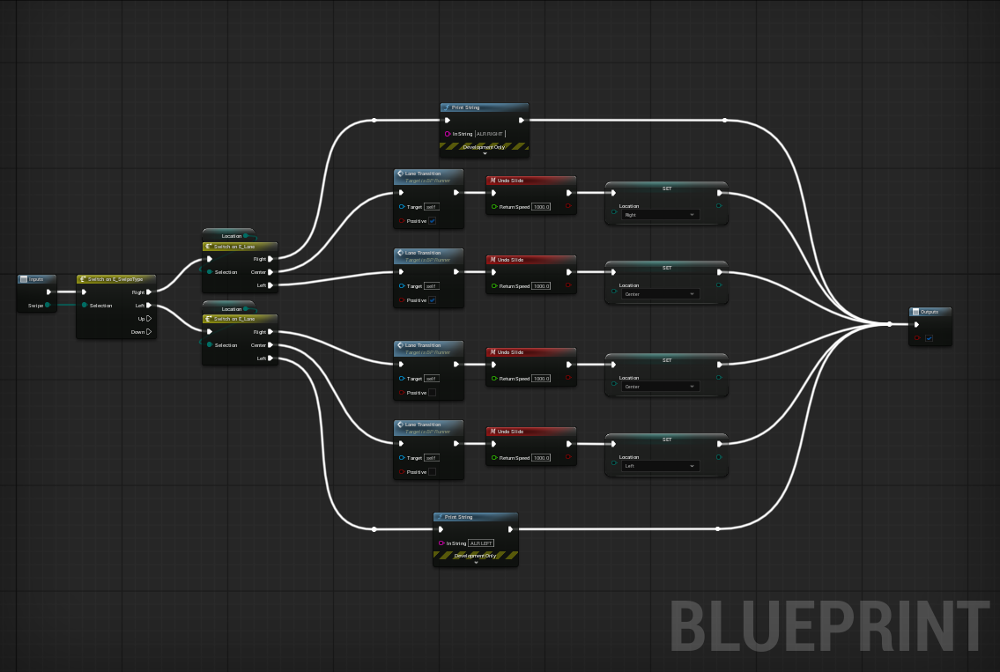
Overall, I'm very happy with how much we've gotten done in this sprint, and if we keep on this same pace, we'll be making more than enough progress to expand our project scope, since we're on track to finish a good 3 sprints early at this rate, so we'll be planning more features and an increased scope during our next sprint!
- Cai Mcdonnell - Programming, Team Lead, Build Engineer
- Andrew Balaris - Producer & Modeler
- Rayen Yousif - Rigger, Animator, Modeler
- Vincent Huang - Modeler & Texturer